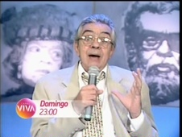
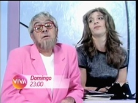

Chico Total
| reprisado de | 22/05/2010 a 10/04/2011 (1º ciclo) |
|---|---|
| em 1 temporada, com 47 programas (ao menos 2 pulos, no 1º ciclo) | |
| frequência | domingos |
| faixa | onze da noite |
| horário alternativo | sáb, às 15h, e dom, às 3h |
Chico Anysio apresenta sua galeria de personagens neste humorístico levado ao ar originalmente de 1996 a 1997 nas noites de sábado. Chico Total foi o segundo humorístico apresentado no Viva, estreando às quatro da tarde do sábado de 22/05/2010. Essa faixa vespertina, na realidade, serviria como um de seus horários alternativos; a exibição principal do programa funcionava aos domingos, às onze da noite. Caso semelhante aconteceu com A Comédia da Vida Privada, que estreou às 15h, mas tinha como faixa titular a meia-noite de domingo. Chico Total também era apresentando às três da manhã de domingo para segunda.
Considerando o período até julho de 2010, Chico Total era o 4º programa mais visto do Viva.
Em outubro de 2010, o Viva estreou o primeiro número de alterações significativas em sua grade de programação. Entre elas, houve uma renovação voltada à faixa de humor. Chico Total foi um dos poucos programas que teve suas exibições quase inalteradas: apenas o horário alternativo na madrugada foi extinto.
Na última semana de fevereiro de 2011, algumas estreias na faixa noturna de humor, já chamada de Viva Rindo, promoveram algumas alterações na grade de sábado - a transição entre os turnos tarde e noite, nesse dia, abrigavam uma maratona da maior parte das atrações da faixa em horários alternativos, vigentes a partir de 26/02/2011. O horário das três da tarde coube a Brasil Legal, de exibição titular às sextas-feiras, e Chico Total foi para as seis da tarde, gerando uma jornada dupla de Chico Anysio: antes, às cinco da tarde, eram exibidas as aulas noturnas da Escolinha do Professor Raimundo.
Em abril de 2011, Chico Total reiniciou sua exibição no Viva. A partir de 04/09/2011, houve uma reformulação na grade dominical, a qual antecedeu o programa para oito da noite. O 2º ciclo foi encerrado em 12/02/2011, e o horário foi ocupado pela série Tarcísio & Glória.
Em 17/10/2013, Chico Total voltou ao ar no Viva nas noites de quinta-feira, em substituição a Viva o Gordo, na faixa principal de humor. Haviam duas exibições alternativas: aos sábados, às cinco da tarde; e aos domingos, às oito e quinze da noite. O horário aos domingos foi descontinuado em fevereiro de 2014, em favor da Sessão Viva, mas no mês seguinte retornou, às sete e quarenta e cinco da noite. Também em março, a exibição aos sábados foi antecedida em 15 minutos, às quatro e quarenta e cinco da tarde.
Em maio, Chico Total ficou com apenas um horário alternativo, aos domingos, às nove e quinze da noite; no mês seguinte, atrasado para nove e quarenta e cinco. Em julho, o alternativo dos sábados retornou, às quatro e quinze da tarde, logo após o capítulo de História de Amor. Em 14/07/2014, segunda-feira, o Viva estreou A Turma do Didi às 20h30. O programa era exibido diariamente, o que impactou a sequência noturna: a exibição principal de Chico Total foi para nove da noite. Em agosto, o horário alternativo dos sábados caiu mais uma vez, e o de domingo foi adiantado para cinco da tarde. A partir de 11/09/2014, Chico Total saiu do ar pela 2ª vez: o horário foi retomado por Viva o Gordo.
chamadas
"Ele já nasceu polêmico... e, desde então, pouca coisa mudou. Você sabe de quem estamos falando, não é? (...) Todo domingo, Chico Anysio diverte as suas noites com seus melhores personagens no Chico Total!"

Em agosto de 2010, Chico Total ganhou uma nova chamada no Viva. "Se um Chico Anysio diverte muita gente... vários Chicos divertem muito mais! Chico Total: todo domingo, onze da noite, e também sábado, três da tarde, aqui no Viva".
Ao final daquele primeiro ano de transmissões, a chamada de Chico Total fazia alusão ao seu bom desempenho no Viva. O comediante dialogava com a propaganda, em cenas do programa: "Quando o Viva estreou, 'eu pensei, eu tenho que achar um espaço para mim'. E, depois de um tempo no ar, veio a certeza: 'meu lugar é aqui"' (...). Chico Total, para quem ainda não viu, e para quem morre de saudades. Todo domingo, onze da noite, e também sábado, três da tarde, aqui no Viva.".
- 
- 
Em março de 2011, Viva o Gordo passou a dividir uma chamada com Chico Total. Os programas eram exibidos em sequência, aos domingos. "Todo domingo, você mata a saudade dos inesquecíveis personagens de Chico Anysio e Jô Soares, em uma dobradinha de peso. (...) A partir das onze da noite, Chico Total e Viva o Gordo".
Uma curta chamada promovia o programa à época de seu 2º ciclo, já no 2º trimestre de 2011: "O humor não tem idade, e nem religião. Mas o humor tem hora: é todo domingo, onze da noite: Chico Total".